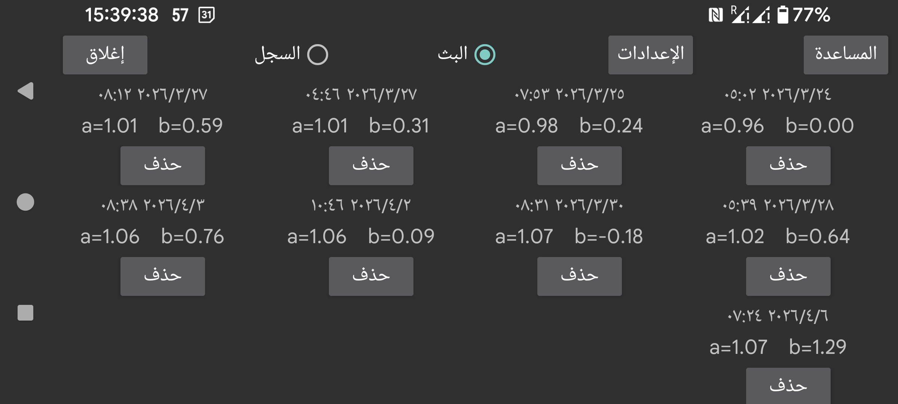

ar de es hi it ja nl ru uk uz en
يعرض هذا القسم المعايرات التي أُجريت لهذا المستشعر. تتكوّن كل معايرة من وقت إجرائها والميل (a) والجزء المقطوع b في العلاقة بين غلوكوز الدم وغلوكوز المستشعر:
غلوكوز الدم = a*غلوكوز المستشعر + b
عندما لا يكون «تغيير الميل» مضبوطاً في القائمة اليسرى ← الإعدادات ← المعايرة، يكون a=1، وبذلك لا يُحدَّد إلا b.
البث : عرض معايرات قيم البث. قيمة البث هي القيمة المعروضة وقت القياس نفسه وتُستخدم للتنبيهات وعمليات البث.
السجل : عرض معايرات القيم التاريخية (الموجودة فقط في Freestyle Libre وCareSens Air). القيم التاريخية هي قيم معدلة تُنشأ لاحقاً كما تُعرض في تطبيقي Librelink وCareSens Air.
يمكن تشغيل عرض المنحنيات المُعايرة وإيقافه من القائمة الوسطى اليمنى قبل «البث» و«السجل».
يؤدي لمس المعايرة إلى الانتقال إلى وقت المعايرة. ويؤدي لمس «حذف» إلى إزالة المعايرة.
الإعدادات: طريقة أخرى للوصول إلى القائمة اليسرى ← الإعدادات ← المعايرة.